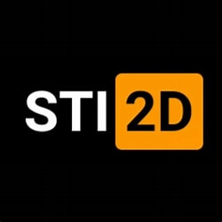

--- Leo Jean UNITE ---
"Étudiant en Science des Données et passionné par l'aviation."
""
Mes Diplômes
Baccalauréat Technologique STI2D
Lycée Eugène Ionesco, 2018 - 2021
Spécialisation Système d'Information Numérique, mention Assez Bien.
Brevet d'Initiation Aéronautique
Lycée Eugène Ionesco, 2021
Formation au milieu aéronautique.
BUT Science des données
Université Paris IUT, 2022 - Présent
Formation orientée sur les statistiques avancées, l’apprentissage automatique et la gestion de bases de données.